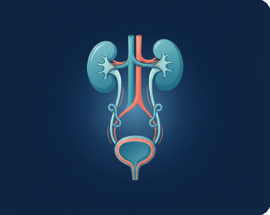

Infección Urinaria y Pielonefritis
Información clara y fundamentada para comprender qué ocurre en tus riñones, cómo se trata la infección, cómo prevenir recurrencias y cuándo buscar atención presencial de urgencia.

¿Qué es la pielonefritis?
Definición médica precisa y vías de infección
La pielonefritis es una infección bacteriana del tracto urinario alto que compromete la pelvis renal y el parénquima de uno o ambos riñones. En la gran mayoría de los casos, se origina por bacterias que ascienden desde la uretra y la vejiga (vía ascendente). La bacteria causante más frecuente es Escherichia coli (responsable del 75% al 90% de los episodios no complicados), aunque también pueden aislarse otros patógenos como Klebsiella pneumoniae, Proteus mirabilis, Enterococcus faecalis o Pseudomonas aeruginosa (especialmente en pacientes con instrumentación urológica, sonda vesical o antecedentes de hospitalización).
Cistitis (Infección baja)
Compromete exclusivamente la vejiga. Provoca ardor al orinar (disuria), frecuencia miccional aumentada (polaquiuria), dolor suprapúbico y urgencia miccional, sin fiebre ni compromiso del estado general.
Pielonefritis (Infección alta)
Afecta el riñón. Se caracteriza por síntomas sistémicos: fiebre (habitualmente ≥ 38 °C), escalofríos con temblor involuntario, dolor lumbar o en el flanco (puñopercusión renal positiva), náuseas y vómitos.
Cuándo buscar ayuda sin esperar
Criterios de derivación presencial y urgencia médica
Diferencias clínicas de los síntomas
Cómo distinguir la zona afectada
Vejiga (Cistitis)
- Ardor, quemazón o escozor al orinar (disuria).
- Ganas constantes de orinar en pequeñas cantidades (polaquiuria).
- Sensación imperiosa de orinar (urgencia miccional).
- Molestia o pesadez en el bajo vientre (área suprapúbica).
- Orina turbia o con olor más intenso; sin fiebre alta.
Riñones (Pielonefritis)
- Fiebre alta (frecuentemente ≥ 38 °C a 39 °C).
- Escalofríos intensos con temblor o sudoración.
- Dolor sordo y constante en la espalda baja o flanco (fosa renal).
- Náuseas, vómitos, decaimiento e inapetencia.
- En diabéticos: descontrol agudo de la glucemia (> 250 mg/dL).
- A veces acompañada de síntomas previos de cistitis.
Tratamiento médico y antibiograma
Principios fundamentales del manejo terapéutico
- Urocultivo previo al inicio: En toda sospecha de pielonefritis debe tomarse una muestra de orina limpia para urocultivo con antibiograma antes de iniciar o ajustar el antibiótico. Esto identifica la bacteria y su sensibilidad exacta.
- Duración del tratamiento: A diferencia de la cistitis simple (3 a 5 días), la pielonefritis aguda requiere tratamientos habitualmente de 7 a 14 días dependiendo del fármaco prescrito (ej. fluoroquinolonas, cefalosporinas, aminoglucósidos o betalactámicos) y la respuesta clínica.
- Cumplimiento estricto: Completa el ciclo completo prescrito aunque los síntomas desaparezcan a los 2 o 3 días. Suspenderlo antes promueve recidivas y cepas bacterianas multirresistentes.
- Nunca uses antibióticos sobrantes: La automedicación puede encubrir síntomas de gravedad, no alcanzar concentraciones renales adecuadas y retrasar el diagnóstico oportuno.
- Criterios de hospitalización: La intolerancia a la vía oral por vómitos, embarazo, sospecha de sepsis, dolor incontrolable o litiasis obstructiva requieren ingreso hospitalario para antibióticos e hidratación por vía intravenosa.
Prevención y hábitos científicamente validados
Medidas preventivas recomendadas por guías clínicas internacionales
- Ingesta de líquidos adecuada: Mantener un consumo de agua de 1,5 a 2,5 litros diarios (aproximadamente 6 a 8 vasos de referencia de 250 mL), distribuidos a lo largo del día. Excepción crítica: Si tu médico te indicó una restricción hídrica por enfermedad renal avanzada, insuficiencia cardíaca o diálisis, no excedas nunca el límite prescrito.
- Vaciamiento vesical periódico: No retener la orina voluntariamente por periodos prolongados. Orinar cada 3 a 4 horas facilita el arrastre mecánico de las bacterias que puedan intentar ascender por la uretra.
- Micción postcoital: Orinar dentro de los 15 a 30 minutos posteriores a una relación sexual ayuda a expulsar bacterias introducidas mecánicamente hacia el meato uretral.
- Higiene íntima de adelante hacia atrás: En mujeres, la limpieza perineal debe realizarse siempre en dirección anterior a posterior para evitar la translocación de microorganismos del área rectal hacia la uretra. Evitar duchas vaginales y desodorantes íntimos que alteran la microbiota protectora.
- Evidencia del extracto de arándano rojo (Cranberry): Los productos de arándano rojo que contienen una dosis estandarizada de proantocianidinas (PAC ≥ 36 mg/día) han demostrado en revisiones sistemáticas (Cochrane) coadyuvar a reducir la recurrencia de infecciones urinarias en mujeres adultas no complicadas, al inhibir la adhesión de las fimbrias tipo P de E. coli al urotelio. No sirve para tratar una infección activa ni reemplaza los antibióticos. No cuenta con evidencia sólida para recomendarse en adultos mayores institucionalizados ni de rutina en el embarazo sin indicación médica.
- Control metabólico en diabetes: La hiperglucemia favorece la glucosuria, que actúa como medio de cultivo para las bacterias, y altera la función fagocítica de los neutrófilos. Mantener la HbA1c y los niveles de glucosa en rangos meta disminuye el riesgo de infecciones urinarias complicadas.
- Tamizaje en el embarazo: Según guías ACOG, NOM-007 y Guía Perinatal MINSAL, toda mujer embarazada debe realizarse un urocultivo de tamizaje entre las semanas 12 y 16. La bacteriuria asintomática no tratada progresa a pielonefritis aguda hasta en un 20% a 40% de los casos.
Autocuidado y monitoreo con NefroGuía
Cómo sacar el máximo provecho de tu registro personal
- Chequeo diario en menos de 2 minutos: Registra cada día tu temperatura matutina y vespertina, tu dolor en escala EVA (0 a 10), el aspecto de tu orina y los vasos de agua consumidos.
- Monitorea el Semáforo de Carga Renal: Observa el color de tu semáforo para saber si tu evolución es favorable (verde), si requiere vigilancia estrecha (amarillo) o si exige consultar de inmediato (rojo).
- Comunícate con tu profesional: Utiliza el módulo de mensajería interna para reportar dudas no urgentes o dosis omitidas a tu médico tratante.
- Lleva tu resumen clínico: Descarga o imprime tu reporte evolutivo antes de acudir a tu cita de control médico.